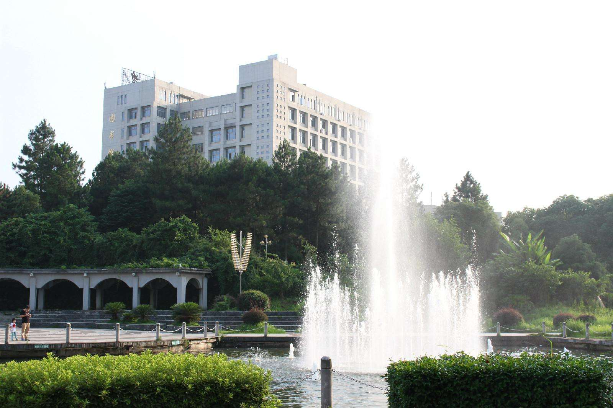
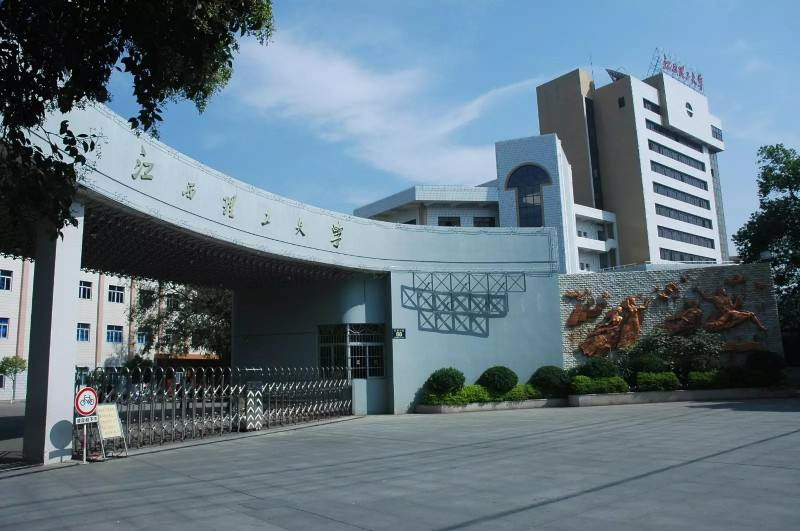
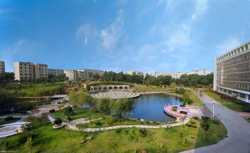
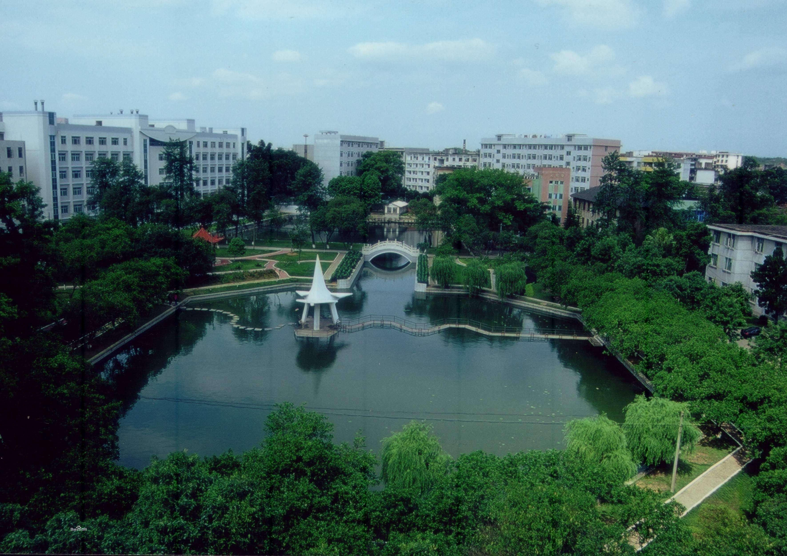

江西理工大学（Jiangxi University of Science and Technology），简称“江理”，创办于1958年，原名江西冶金学院，1988年更名为南方冶金学院，2004年更名为江西理工大学。学校曾先后隶属于冶金工业部、中国有色金属工业总公司，2013年成为江西省人民政府、工业和信息化部、教育部共建高校。 [1] 江西理工大学具有博士、硕士和学士学位授予权，是一所以工学为主，理工结合，管理学、经济学、法学、文学、艺术学、教育学等多学科协调发展的教学研究型大学；是宝钢教育奖评审高校；具有推荐优秀本科生免试攻读硕士学位资格；是我国有色金属工业和钢铁工业重要的人才培养和科研基地，被誉为“有色冶金人才摇篮”；是江西省优势特色学科建设工程一流学科建设高校，入选卓越工程师教育培养计划（2011）、中西部高校基础能力建设工程（二期），先后被教育部评为全国毕业生就业典型经验高校、全国创新创业典型经验高校。 学校校本部位于国家历史文化名城——江西省赣州市。截至2020年7月，学校在赣州、南昌两地有5个校区，占地面积共计3700余亩。学校现有17个教学学院，18个科研院所，拥有1个全国示范院士工作站、1个博士后科研流动站、1个博士后科研工作站、2个一级学科博士点，22个一级学科硕士点，11个专业硕士学位点，72个本科专业。学校现有教职工2000多人（其中专任教师1450人、博士教师600余人），全日制在校本科生3.3万人，在校研究生3800余人（其中博士研究生120余人）。
   